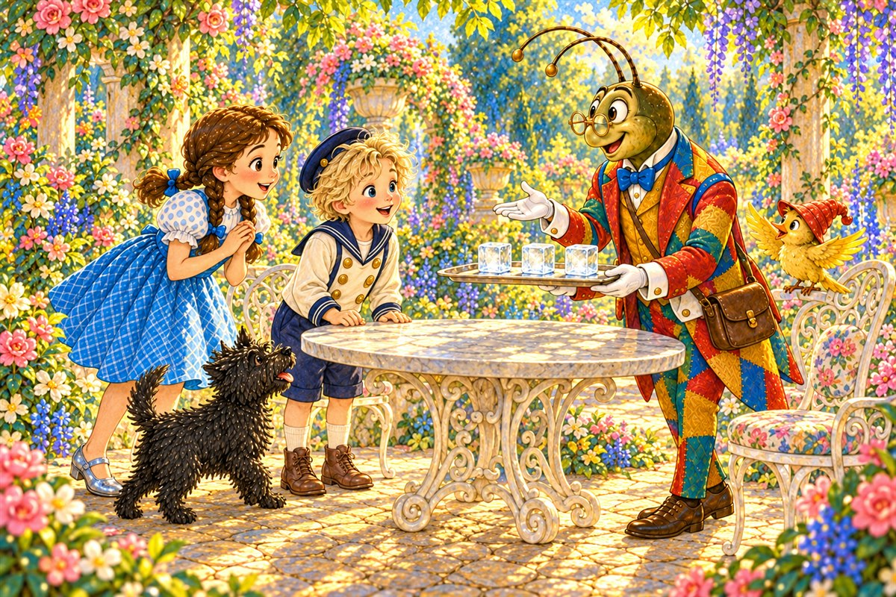
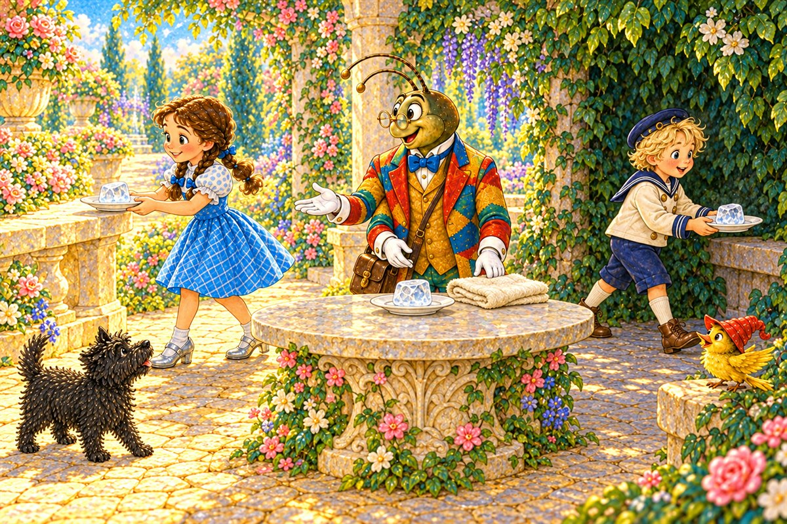
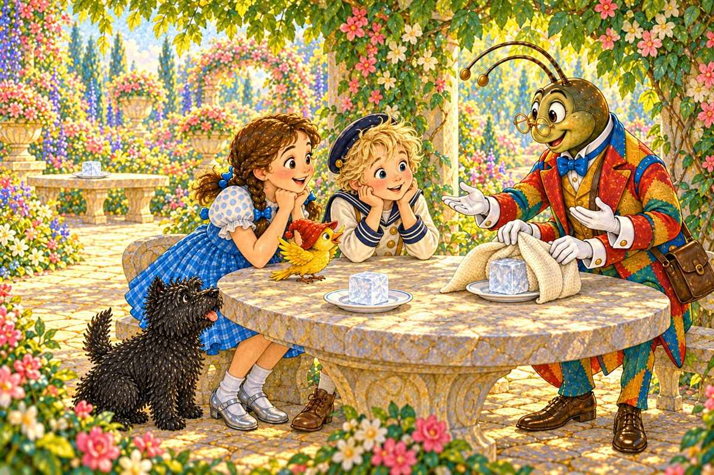
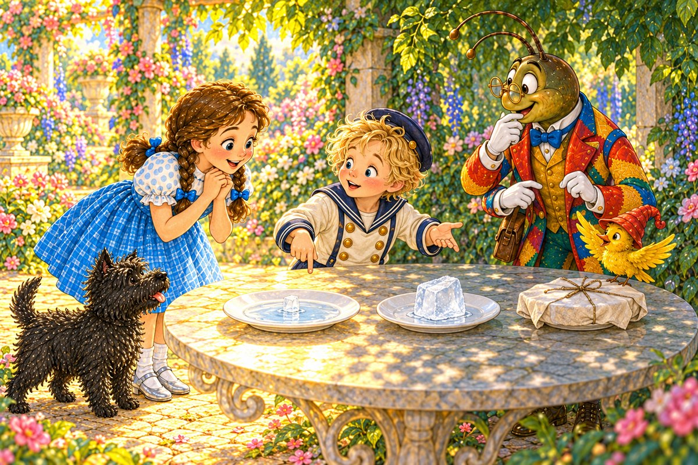
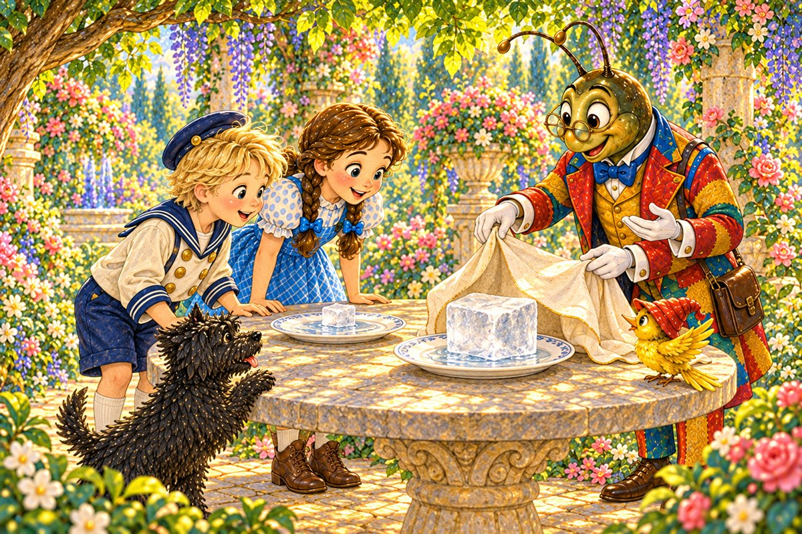
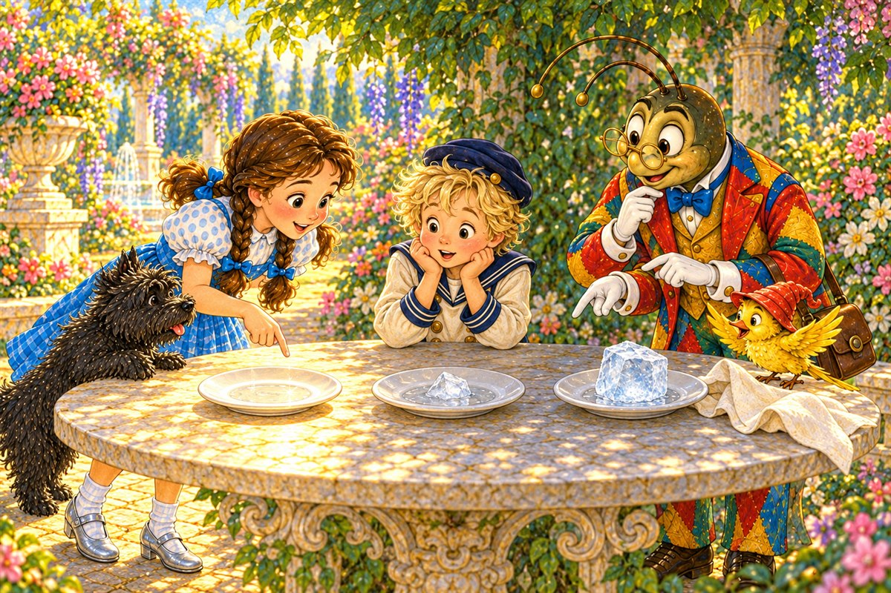
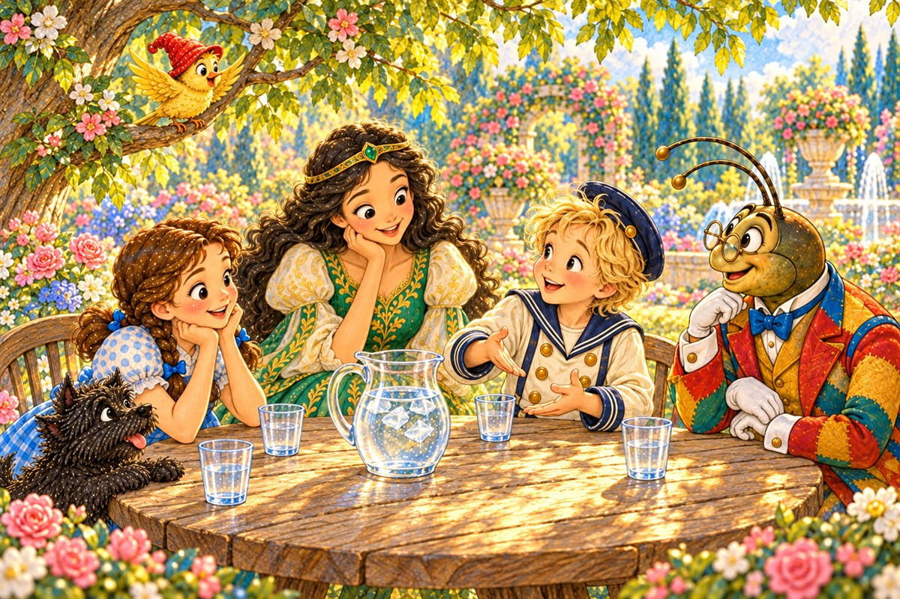

Pahina 1
Isang hapon, nasa hardin sina Dorothy, Toto, at Button-Bright.
Dumating si Propesor Wogglebug kasama ang ibong dilaw.
May dala siyang tatlong magkakaparehong piraso ng yelo.
Isang bagong tuklas sa Lupain ng Oz
Basahin ang tatlong bagong pahina bawat araw. Bago magpatuloy, balikan muna ang mga pahinang nabasa na.

Isang hapon, nasa hardin sina Dorothy, Toto, at Button-Bright.
Dumating si Propesor Wogglebug kasama ang ibong dilaw.
May dala siyang tatlong magkakaparehong piraso ng yelo.
“Darating si Ozma,” sabi ng propesor.
“Kailangan nating panatilihing malamig ang tubig.”
Tumingin si Dorothy. “Ngunit matutunaw ang mga ito!”

Naglagay sila ng tig-isang piraso sa tatlong platito.
Pareho ang laki ng yelo.
Sabay nilang sinimulan ang pagsubok.
Inilagay ni Dorothy ang unang platito sa ilalim ng araw.
Inilagay ni Button-Bright ang ikalawa sa lilim.
Parehong walang takip ang mga ito.

Binalot ng propesor sa makapal na tela ang ikatlong piraso.
Inilagay niya ito sa lilim, katabi ng ikalawa.
Pagkalipas ng ilang minuto, tiningnan nila ang unang dalawa.
“Natunaw na ba?” tanong ng ibon.
“Hindi pa, pero natutunaw na,” sagot ni Dorothy.

Marami ang tubig sa platitong nasa araw.
Kaunti ang tubig sa platitong nasa lilim.
“Mas mabilis matunaw sa araw,” sabi ni Button-Bright.

Maingat na binuksan ng propesor ang tela.
Halos buo pa ang yelong nakabalot.
Kaunti ang tubig sa ilalim nito.
Muli niya itong binalot.
Naghintay sila nang parehong tagal.
Hindi nila ginalaw ang mga platito.
Binantayan ni Toto ang tela, habang umawit ang ibon.

Nang muli silang tumingin, natunaw na ang yelo sa araw.
Mas maliit na ang yelo sa lilim.
Pinakamalaki pa rin ang yelong nakabalot.
“Hindi gumagawa ng lamig ang tela,” paliwanag ng propesor.
“Pinabagal nito ang pagpasok ng init.”
Ginamit ang yelo para palamigin ang pitsel.

Dumating si Ozma. Malamig ang tubig.
“Matutunaw ang yelo. Natutunaw ito ngayon. Ang nasa araw ay unang natunaw,” paliwanag ni Button-Bright.
Tumahol si Toto, at umawit ang ibon.
Pag-usapan natin